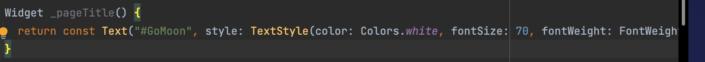
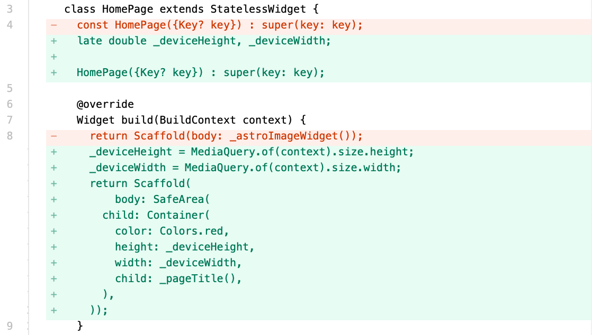
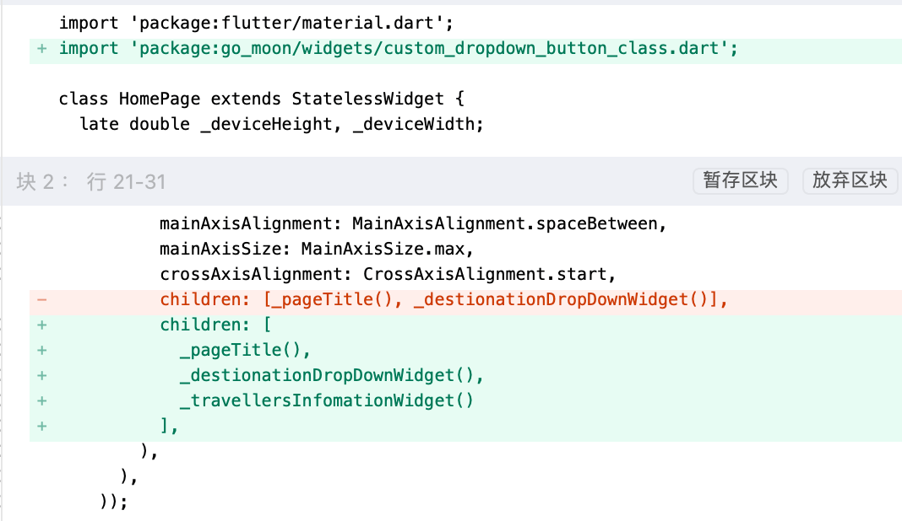

1. GoMoon
24.8.8新增
1.1. 创建项目
1.1.1. 检查flutter版本：
localhost:flutter chenchangqing$ flutter --version
Flutter 3.3.10 • channel stable • https://github.com/flutter/flutter.git
Framework • revision 135454af32 (1 year, 8 months ago) • 2022-12-15 07:36:55 -0800
Engine • revision 3316dd8728
Tools • Dart 2.18.6 • DevTools 2.15.0
1.1.2. 创建flutter项目：
localhost:flutter chenchangqing$ flutter create go_moon
Creating project go_moon...
Running "flutter pub get" in go_moon... 4.0s
Wrote 127 files.
All done!
In order to run your application, type:
$ cd go_moon
$ flutter run
Your application code is in go_moon/lib/main.dart.
1.1.3. 打开项目
使用Android Studio打开项目，然后运行：
1.2. 新增首页
1.2.1. 新增图片
新建assets/images文件夹，导入下图：
在.yaml配置assets，注意空格
# To add assets to your application, add an assets section, like this:
assets:
- assets/images/
拷贝图片路径：
1.2.2. 创建pages/home_page.dart
import 'package:flutter/material.dart';
class HomePage extends StatelessWidget {
const HomePage({Key? key}) : super(key: key);
@override
Widget build(BuildContext context) {
return Scaffold(
body: Container(
decoration: const BoxDecoration(
image: DecorationImage(
fit: BoxFit.fitHeight,
image: AssetImage("assets/images/flutter_go_moon_02.png")
)
),
)
);
}
}
1.2.3. 修改main.dart
import 'package:flutter/material.dart';
import 'package:go_moon/pages/home_page.dart';
void main() {
runApp(const MyApp());
}
class MyApp extends StatelessWidget {
const MyApp({super.key});
// This widget is the root of your application.
@override
Widget build(BuildContext context) {
return MaterialApp(
title: 'Flutter Demo',
theme: ThemeData(
// This is the theme of your application.
//
// Try running your application with "flutter run". You'll see the
// application has a blue toolbar. Then, without quitting the app, try
// changing the primarySwatch below to Colors.green and then invoke
// "hot reload" (press "r" in the console where you ran "flutter run",
// or simply save your changes to "hot reload" in a Flutter IDE).
// Notice that the counter didn't reset back to zero; the application
// is not restarted.
primarySwatch: Colors.blue,
),
home: const HomePage(),
);
}
}
1.2.4. 抽取背景组件方法
@override
Widget build(BuildContext context) {
return Scaffold(
body: _astroImageWidget()
);
}
Container _astroImageWidget() {
return Container(
decoration: const BoxDecoration(
image: DecorationImage(
fit: BoxFit.fitHeight,
image: AssetImage("assets/images/flutter_go_moon_02.png")
)
),
);
}
1.3. 新增标题
Widget _pageTitle() {
return const Text(
"#GoMoon",
style: TextStyle(
color: Colors.white, fontSize: 70, fontWeight: FontWeight.w800),
);
}
1.3.1. 格式化代码
 修改flutter设置：
1.3.2. 增加Container

class HomePage extends StatelessWidget {
late double _deviceHeight, _deviceWidth;
HomePage({Key? key}) : super(key: key);
@override
Widget build(BuildContext context) {
_deviceHeight = MediaQuery.of(context).size.height;
_deviceWidth = MediaQuery.of(context).size.width;
return Scaffold(
body: SafeArea(
child: Container(
color: Colors.red,
height: _deviceHeight,
width: _deviceWidth,
child: _pageTitle(),
),
));
}
...
}
修改main.dart

快捷添加父组件：
option+enter
1.3.3. 增加左右边距
padding: EdgeInsets.symmetric(horizontal: _deviceWidth * 0.05),
1.4. 新增下拉
...
Widget _destionationDropDownWidget() {
List<DropdownMenuItem<String>> _items = [
'James Webb Station',
'Preneure Station',
]
.map(
(e) => DropdownMenuItem(
child: Text(e),
value: e,
),
)
.toList();
return Container(
child: DropdownButton(
onChanged: (_) {},
items: _items,
),
);
}
}
1.4.1. 增加Column
Column(
mainAxisAlignment: MainAxisAlignment.spaceBetween,
mainAxisSize: MainAxisSize.max,
crossAxisAlignment: CrossAxisAlignment.start,
children: [_pageTitle(), _destionationDropDownWidget()],
)
1.4.2. 优化方法
...
Widget _destionationDropDownWidget() {
List<String> _items = [
'James Webb Station',
'Preneure Station',
];
return Container(
child: Container(
padding: EdgeInsets.symmetric(horizontal: _deviceWidth * 0.05),
width: _deviceWidth,
decoration: BoxDecoration(
color: const Color.fromRGBO(53, 53, 53, 1.0),
borderRadius: BorderRadius.circular(10)),
child: DropdownButton(
value: _items.first,
onChanged: (_) {},
items: _items
.map((e) => DropdownMenuItem(
value: e,
child: Text(e),
))
.toList(),
underline: Container(),
dropdownColor: const Color.fromRGBO(53, 53, 53, 1.0),
style: const TextStyle(color: Colors.white),
),
),
);
}
...
1.4.3. 创建下拉组件
新建widgets文件夹，在widgets中，新建custom_dropdown_button_class.dart
import 'package:flutter/material.dart';
class CustomDropDownButtonClass extends StatelessWidget {
List<String> values;
double width;
CustomDropDownButtonClass(
{super.key, required this.values, required this.width});
@override
Widget build(BuildContext context) {
return Container(
padding: EdgeInsets.symmetric(horizontal: width * 0.05),
width: width,
decoration: BoxDecoration(
color: const Color.fromRGBO(53, 53, 53, 1.0),
borderRadius: BorderRadius.circular(10)),
child: DropdownButton(
value: values.first,
onChanged: (_) {},
items: values
.map((e) => DropdownMenuItem(
value: e,
child: Text(e),
))
.toList(),
underline: Container(),
dropdownColor: const Color.fromRGBO(53, 53, 53, 1.0),
style: const TextStyle(color: Colors.white),
),
);
}
}
修改home_page.dart：

1.4.4. 下拉组件布局
Widget _travellersInfomationWidget() {
return Row(
mainAxisAlignment: MainAxisAlignment.spaceBetween,
mainAxisSize: MainAxisSize.max,
crossAxisAlignment: CrossAxisAlignment.center,
children: [
CustomDropDownButtonClass(
values: const ['1', '2', '3', '4', '5'],
width: _deviceWidth * 0.45),
CustomDropDownButtonClass(
values: const ['Economy', 'Business', 'First', 'Private'],
width: _deviceWidth * 0.40),
],
);
}
Widget _bookRideWidget() {
return Container(
height: _deviceWidth * 0.25,
child: Column(
mainAxisAlignment: MainAxisAlignment.spaceBetween,
mainAxisSize: MainAxisSize.max,
crossAxisAlignment: CrossAxisAlignment.center,
children: [
_destionationDropDownWidget(),
_travellersInfomationWidget()
],
),
);
}
1.5. 新增按钮
Widget _rideButton() {
return Container(
padding: EdgeInsets.only(bottom: _deviceHeight * 0.01),
width: _deviceWidth,
decoration: BoxDecoration(
color: Colors.white, borderRadius: BorderRadius.circular(10)),
child: MaterialButton(
onPressed: () {},
child: const Text(
"Book Ride!",
style: TextStyle(color: Colors.black),
),
),
);
}
1.6. 增加背景
最终UI：
1.7. 项目地址
https://gitee.com/learnany/flutter/blob/master/go_moon.zip
备案号：
沪ICP备2022002183号-1